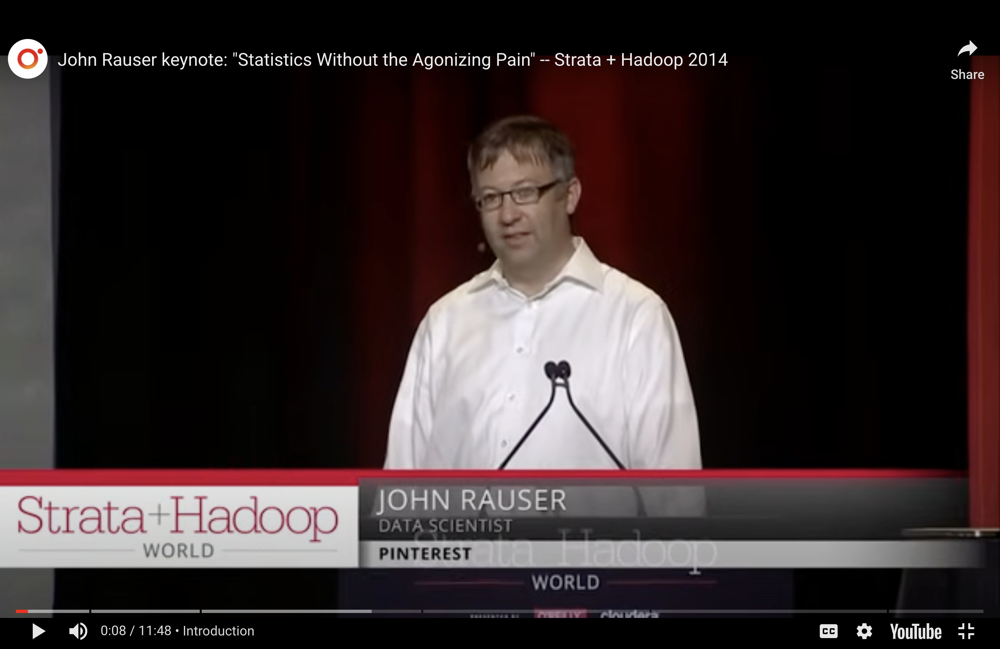
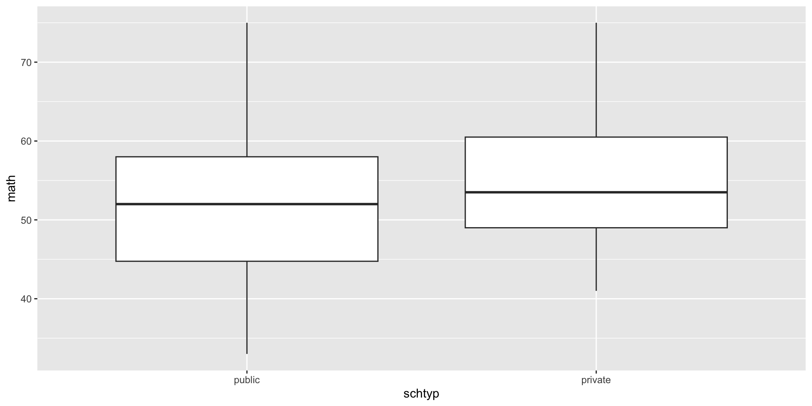

n.b., Helper-Hindered example uses a simulation to accomplish the hypothesis test, but it isn’t a permutation test becasue we aren’t permuting anything!
Example: helper or hinderer
In a study reported in the November 2007 issue of Nature, researchers investigated whether infants take into account an individual’s actions towards others in evaluating that individual as appealing or aversive, perhaps laying for the foundation for social interaction (Hamlin, Wynn, and Bloom 2007). In other words, do children who aren’t even yet talking still form impressions as to someone’s friendliness based on their actions? In one component of the study, 10-month-old infants were shown a “climber” character (a piece of wood with “googly” eyes glued onto it) that could not make it up a hill in two tries. Then the infants were shown two scenarios for the climber’s next try, one where the climber was pushed to the top of the hill by another character (the “helper” toy) and one where the climber was pushed back down the hill by another character (the “hinderer” toy). The infant was alternately shown these two scenarios several times. Then the child was presented with both pieces of wood (the helper and the hinderer characters) and asked to pick one to play with.
\(\hat{p}\) = proportion of infants who chose helper = 14/16 = 0.875
What is the parameter?
p = proportion of all infants who might choose helper (not measurable!)
Hypotheses
\(H_0\): Null hypothesis. Babies (or rather, the population of babies under consideration) have no inherent preference for the helper or the hinderer shape.
\(H_A\): Alternative hypothesis. Babies (or rather, the population of babies under consideration) are more likely to prefer the helper shape over the hinderer shape.
p-value
p-value is the probability of our data or more extreme if nothing interesting is going on.
completely arbitrary cutoff
\(\rightarrow\)
generally accepted conclusion
p-value \(>\) 0.10
\(\rightarrow\)
no evidence against the null model
0.05 \(<\) p-value \(<\) 0.10
\(\rightarrow\)
moderate evidence against the null model
0.01 \(<\) p-value \(<\) 0.05
\(\rightarrow\)
strong evidence against the null model
p-value \(<\) 0.01
\(\rightarrow\)
very strong evidence against the null model
Computation
First find the statistic
# to control the randomnessset.seed(47)# first create a data frame with the Infant dataInfants <-read.delim("http://www.rossmanchance.com/iscam3/data/InfantData.txt")# find the observed number of babies who chose the helperhelp_obs <- Infants |>summarize(prop_help =mean(choice =="helper")) |>pull()help_obs
[1] 0.875
Computation
Find the sampling distribution under the condition that the null hypothesis is true.
# write a function to simulate a set of infants who are # equally likely to choose the helper or the hindererrandom_choice <-function(rep, num_babies){ choice =sample(c("helper", "hinderer"), size = num_babies,replace =TRUE, prob =c(0.5, 0.5))return(mean(choice =="helper"))}
# repeat the function many timesmap_dbl(c(1:10), random_choice, num_babies =16)
# visualize null sampling distributionhelp_random |>data.frame() |>ggplot(aes(x = help_random)) +geom_histogram() +labs(x ="proportion of babies who chose the helper",title ="sampling distribution when null hypothesis is true",subtitle ="that is, no inherent preference for helper or hinderer")
Computation
Are the null values consistent with the observed value?
# the p-value!sum(help_random >= help_obs) / num_exper
[1] 0.0022
# visualize null sampling distributionhelp_random |>data.frame() |>ggplot(aes(x = help_random)) +geom_histogram() +geom_vline(xintercept = help_obs, color ="red") +labs(x ="proportion of babies who chose the helper",title ="sampling distribution when null hypothesis is true",subtitle ="that is, no inherent preference for helper or hinderer")
All together: structure of a hypothesis test
decide on a research question (which will determine the test)
collect data, specify the variables of interest
state the null (and alternative) hypothesis values (often statements about parameters)
the null claim is the science we want to reject
the alternative claim is the science we want to demonstrate
generate a (null) sampling distribution to describe the variability of the statistic that was calculated along the way
visualize the distribution of the statistics under the null model
get p-value to measure the consistency of the observed statistic and the possible values of the statistic under the null model
make a conclusion using words that describe the research setting
Hypotheses
Hypothesis Testing compares data to the expectation of a specific null hypothesis. If the data are unusual, assuming that the null hypothesis is true, then the null hypothesis is rejected.
The Null Hypothesis, \(H_0\), is a specific statement about a population made for the purposes of argument. A good null hypothesis is a statement that would be interesting to reject.
The Alternative Hypothesis, \(H_A\), is a specific statement about a population that is in the researcher’s interest to demonstrate. Typically, the alternative hypothesis contains all the values of the population that are not included in the null hypothesis.
In a two-sided (or two-tailed) test, the alternative hypothesis includes values on both sides of the value specified by the null hypothesis.
In a one-sided (or one-tailed) test, the alternative hypothesis includes parameter values on only one side of the value specified by the null hypothesis. \(H_0\) is rejected only if the data depart from it in the direction stated by \(H_A\).
Agenda 3/31/25
Two variable permutation tests
Same hypothesis testing ideas: now we have two variables and we permute one of them to make the null hypothesis true.
Statistics Without the Agonizing Pain

John Rauser of Pintrest (now Amazon), speaking at Strata + Hadoop 2014. https://blog.revolutionanalytics.com/2014/10/statistics-doesnt-have-to-be-that-hard.html
Logic of hypothesis tests
Choose a statistic that measures the effect.
Construct the sampling distribution under \(H_0\).
Locate the observed statistic in the null sampling distribution.
p-value is the probability of the observed data or more extreme if the null hypothesis is true
Logic of permutation tests
Choose a test statistic.
Shuffle the data (force the null hypothesis to be true). Using the shuffled statistics, create a null sampling distribution of the test statistic (under \(H_0\)).
Find the observed test statistic on the null sampling distribution.
Compute the p-value (observed data or more extreme). The p-value can be one or two-sided.
Data: 200 randomly selected observations from the High School and Beyond survey, conducted on high school seniors by the National Center for Educational Statistics.
Research Question: in the population, do private school kids have a higher math score on average?
\(\mu\) is the average math score in the population.
library(openintro)hsb2
# A tibble: 200 × 11
id gender race ses schtyp prog read write math science
<int> <chr> <chr> <fct> <fct> <fct> <int> <int> <int> <int>
1 70 male white low public gene… 57 52 41 47
2 121 female white midd… public voca… 68 59 53 63
3 86 male white high public gene… 44 33 54 58
4 141 male white high public voca… 63 44 47 53
5 172 male white midd… public acad… 47 52 57 53
6 113 male white midd… public acad… 44 52 51 63
7 50 male african … midd… public gene… 50 59 42 53
8 11 male hispanic midd… public acad… 34 46 45 39
9 84 male white midd… public gene… 63 57 54 58
10 48 male african … midd… public acad… 57 55 52 50
# ℹ 190 more rows
# ℹ 1 more variable: socst <int>
# A tibble: 2 × 3
schtyp ave_math med_math
<fct> <dbl> <dbl>
1 public 52.2 52
2 private 54.8 53.5
Visualize the relationship of interest
hsb2 |>ggplot(aes(x = schtyp, y = math)) +geom_boxplot()

Calculate the observed statistic(s)
For fun, we are calculating both the difference in averages as well as the difference in medians. That is, we have two different observed summary statistics to work with.
From these data, the observed differences seem to be consistent with the distribution of differences in the null sampling distribution.
There is no evidence to reject the null hypothesis.
We cannot claim that in the population the average math scores for private school kids is larger than the average math scores for public school kids (p-value = 0.086).
We cannot claim that in the population the median math scores for private school kids is larger than the median math scores for public school kids (p-value = 0.27).
Two-sided test:
\(H_0: \mu_{private} = \mu_{public}\) and \(H_A: \mu_{private} \ne \mu_{public}\)